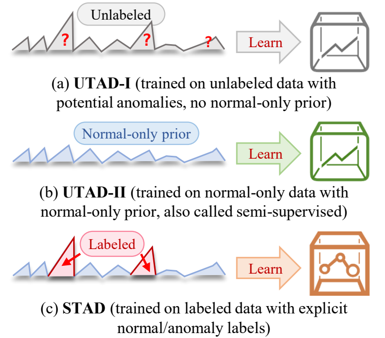
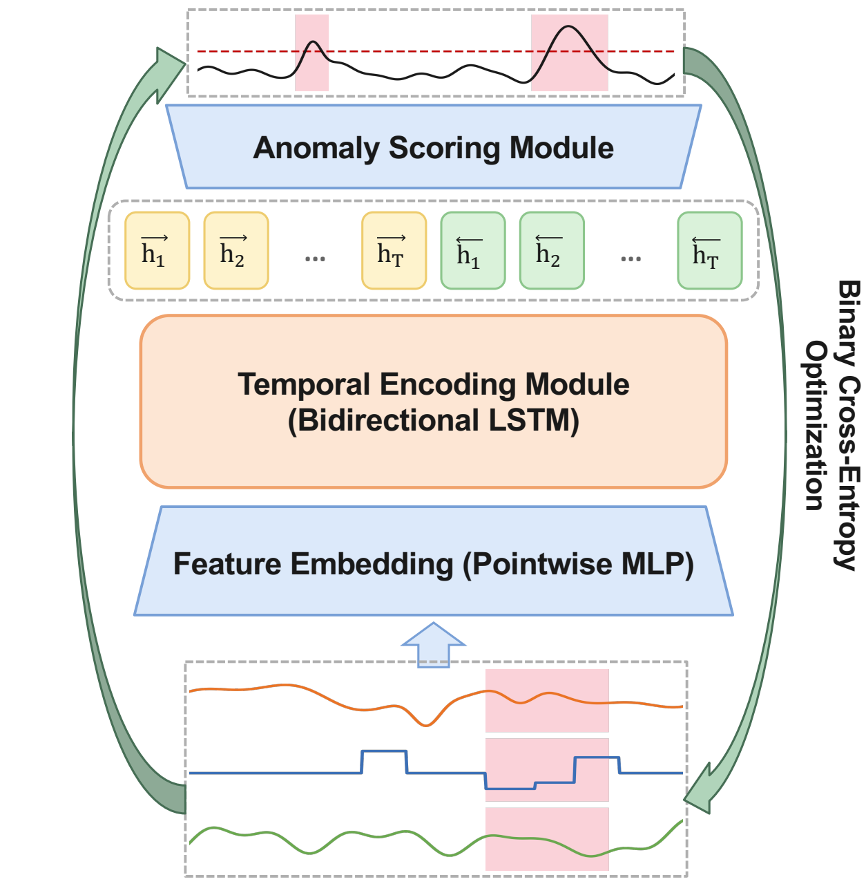
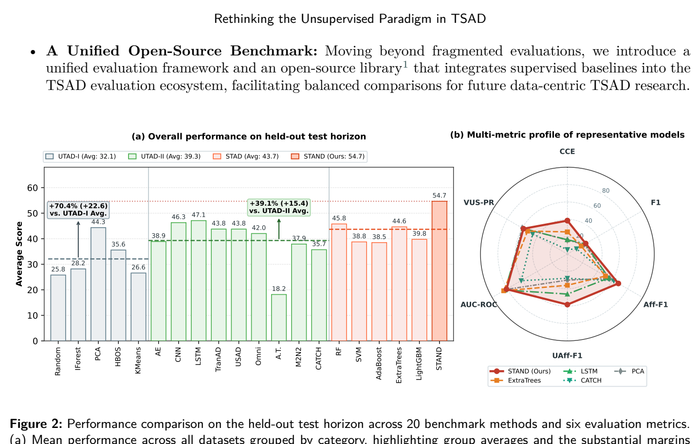
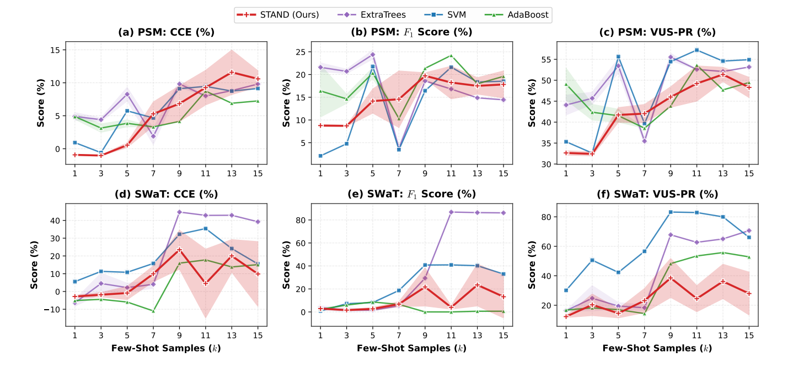
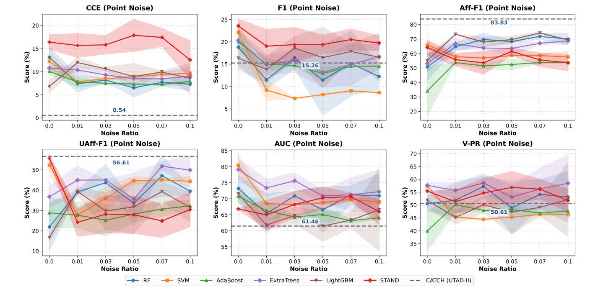
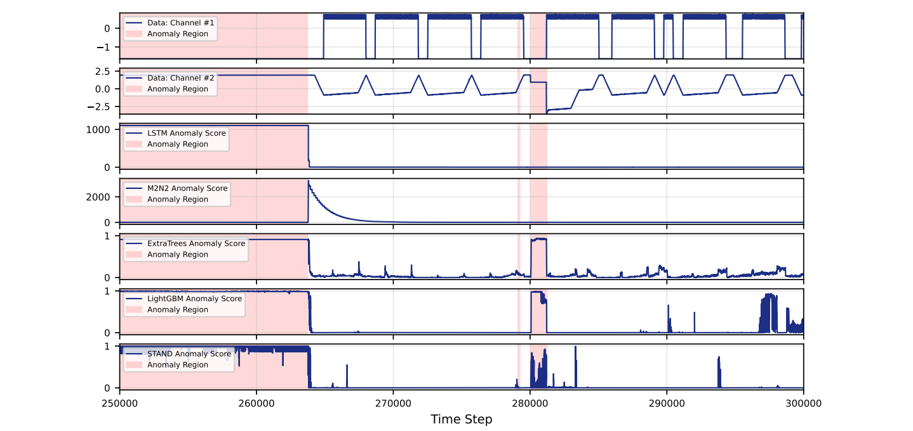
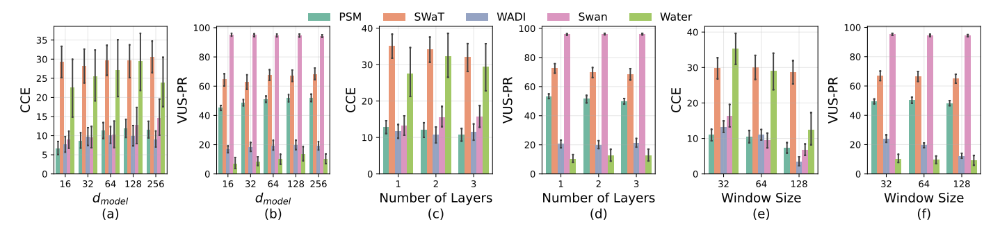

An Empirical Study and Minimalist Baseline
STAND achieves an average score of 54.7, beating unsupervised UTAD-I by +70.4% and UTAD-II by +39.1%, ranking 1st (Rank 5.70) across 20 competitive models.
Only 0.04M parameters, 86.5 MB VRAM (>96% lower than CATCH, >98% lower than Anomaly Transformer), and executes in 8.8 μs/pt (27× faster than Transformer).
Observing merely 5 to 7 archived failure episodes is sufficient for STAND to surpass heavy unsupervised deep learning architectures under realistic operational conditions.
Recurrent inductive smoothing enables STAND to retain high prediction certainty (CCE: 38.50 vs <17.55) and withstand up to 10% label noise without performance collapse.
Why continuous unsupervised architectural scaling yields diminishing returns when sparse historical annotations are accessible
Time series anomaly detection (TSAD) research has predominantly focused on unsupervised architectures (UTAD-I and UTAD-II) to model normal dynamics under label scarcity. However, this academic prerequisite is frequently challenged in actual industrial deployments.
In critical cyber-physical systems, data centers, and industrial utility facilities, verified failure records are naturally archived through:
Because these records are standard compliance byproducts, retroactively harvesting a sparse collection of failure events incurs negligible annotation expense. We therefore empirically quantify whether scaling supervisory signals yields far higher practical returns than escalating model complexity.

Through statistical learning theory, we contrast the sample complexity of non-parametric normal density estimation against discriminative boundary classification:
Exponential dependence on feature dimension $C$ makes modeling high-dimensional manifolds (e.g., $C=122$ in WADI) inherently sample-hungry and vulnerable to background variance.
PAC sample complexity depends polynomially on $1/\epsilon$ and linearly on model capacity $d_{\text{VC}}(\mathcal{H})$, evading direct exponential dependence on the telemetry channel dimension $C$.
A deliberately minimalist supervised baseline based on bidirectional recurrent encoding

Projects raw multivariate telemetry $\mathbf{x}_t \in \mathbb{R}^C$ into a $d_{\text{model}}$-dimensional discriminative latent space via a standard multi-layer perceptron (MLP) with GELU activations and Layer Normalization: $$\mathbf{H}^e = \text{LayerNorm}(\text{GELU}(\mathbf{X} \mathbf{W}_e + \mathbf{b}_e)) \in \mathbb{R}^{T \times d_{\text{model}}}$$
Default (STAND): Bidirectional LSTM captures temporal context from both anomaly onset and post-incident recovery patterns for offline auditing: $$\mathbf{h}_t^{\text{enc}} = [\overrightarrow{\text{LSTM}}(\mathbf{h}_t^e) \, ; \, \overleftarrow{\text{LSTM}}(\mathbf{h}_t^e)] \in \mathbb{R}^{2 d_{\text{model}}}$$ Streaming (STAND-Causal): Unidirectional forward-only causal recurrence with zero look-ahead buffering delay for real-time online deployments.
A linear projection produces scalar logits $s_t$, trained end-to-end via timestamp-level Binary Cross-Entropy (BCE) loss: $$\mathcal{L} = -\frac{1}{T} \sum_{t=1}^T \left[ y_t \log(\sigma(s_t)) + (1 - y_t) \log(1 - \sigma(s_t)) \right]$$ Eliminates multi-stage adversarial pipelines, memory banks, and complex hyperparameter reweighting.
All evaluations partition telemetry streams chronologically into an initial 50% training prefix and a strictly held-out 50% evaluation suffix with zero temporal look-ahead leakage.
Evaluated across 5 multivariate industrial benchmarks (PSM, SWaT, WADI, Swan, Water) and 6 diverse evaluation metrics

Evaluated on held-out 50% temporal horizon. Bold indicates best, underline indicates second-best. Categories: UTAD-I, UTAD-II, STAD, and STAND (Ours).
| Model | Category | PSM | SWaT | WADI | Average (All 5 Datasets) | ||||||||
|---|---|---|---|---|---|---|---|---|---|---|---|---|---|
| CCE | F1 | VUS-PR | CCE | F1 | VUS-PR | CCE | F1 | VUS-PR | CCE | F1 | UAff-F1 | ||
| Random | UTAD-I | -0.52 | 8.49 | 35.30 | -0.46 | 7.87 | 19.55 | 0.99 | 3.18 | 6.17 | 0.93 | 5.84 | 6.51 |
| IForest | UTAD-I | 0.40 | 14.23 | 36.30 | 0.40 | 6.72 | 15.36 | 11.57 | 10.59 | 19.86 | 11.05 | 11.38 | -5.91 |
| PCA | UTAD-I | 10.22 | 17.77 | 59.91 | 5.64 | 34.75 | 77.11 | 16.32 | 32.83 | 29.05 | 16.06 | 22.26 | 29.99 |
| HBOS | UTAD-I | -0.50 | 10.66 | 34.71 | 14.58 | 5.07 | 51.92 | 16.01 | 18.53 | 26.56 | 15.11 | 11.23 | 9.02 |
| KMeans | UTAD-I | -1.10 | 6.79 | 28.84 | 0.53 | 14.31 | 17.78 | 13.50 | 5.43 | 10.92 | 9.57 | 7.49 | 7.33 |
| AE | UTAD-II | 5.94 | 4.90 | 37.57 | 21.36 | 31.37 | 76.31 | 22.08 | 24.35 | 18.94 | 16.11 | 15.22 | 29.97 |
| CNN | UTAD-II | 2.06 | 24.97 | 62.25 | 37.30 | 41.57 | 82.35 | 13.53 | 28.86 | 35.37 | 17.00 | 24.47 | 36.71 |
| LSTM | UTAD-II | 1.87 | 25.54 | 61.26 | 38.07 | 41.57 | 81.90 | 14.65 | 29.25 | 35.49 | 16.47 | 23.61 | 46.09 |
| TranAD | UTAD-II | 0.47 | 16.40 | 53.91 | 38.32 | 41.57 | 81.38 | 12.60 | 27.93 | 36.17 | 14.12 | 20.46 | 39.28 |
| USAD | UTAD-II | 4.28 | 16.72 | 55.40 | 38.30 | 41.57 | 80.85 | 15.29 | 30.31 | 29.52 | 17.53 | 22.11 | 40.76 |
| OmniAnomaly | UTAD-II | 11.96 | 18.16 | 51.57 | 38.41 | 41.57 | 77.46 | 14.66 | 30.18 | 42.14 | 17.14 | 22.45 | 31.39 |
| Anomaly Transformer | UTAD-II | 0.51 | 10.26 | 36.48 | 0.00 | 1.20 | 19.53 | -0.34 | 1.06 | 5.76 | 3.22 | 4.23 | -25.59 |
| M2N2 | UTAD-II | -0.01 | 14.83 | 51.71 | -0.51 | 15.32 | 40.06 | 10.63 | 27.13 | 35.44 | 3.67 | 16.27 | 24.80 |
| CATCH | UTAD-II | 0.54 | 15.26 | 50.61 | 0.01 | 5.79 | 13.57 | 2.23 | 15.75 | 26.05 | 5.05 | 12.16 | 27.88 |
| Random Forest | STAD | 13.14 | 18.81 | 50.54 | 31.01 | 39.04 | 80.28 | 23.82 | 46.73 | 63.63 | 26.14 | 17.93 | 40.44 |
| SVM | STAD | 12.25 | 22.13 | 57.39 | 19.93 | 15.09 | 76.17 | 12.87 | 33.22 | 42.92 | 11.31 | 12.00 | 33.02 |
| AdaBoost | STAD | 10.05 | 20.06 | 39.94 | 15.39 | 22.34 | 37.79 | 11.60 | 27.13 | 27.07 | 17.59 | 14.29 | 28.74 |
| ExtraTrees | STAD | 10.78 | 20.36 | 57.64 | 39.10 | 52.71 | 53.93 | 27.43 | 51.47 | 73.56 | 25.52 | 18.39 | 35.95 |
| LightGBM | STAD | 6.79 | 16.35 | 51.89 | 39.25 | 28.39 | 64.47 | 23.50 | 44.47 | 50.02 | 24.28 | 14.79 | 21.57 |
| STAND (Ours) | STAND | 16.39 | 23.58 | 55.47 | 51.97 | 36.88 | 79.62 | 26.70 | 37.33 | 39.71 | 38.50 | 24.32 | 58.22 |
* Complete tabulated values for all 20 methods across 5 datasets and 6 metrics are documented in Section 5.3 of the main paper.
In industrial deployments, anomaly annotations naturally arrive as a sparse stream of historical failure episodes rather than arbitrary timestamps. We parameterized training partitions by $k \in \{1, 3, 5, 7, 9, 11, 13, 15\}$ discrete, contiguous anomaly episodes alongside their surrounding operational context.
While $k \le 3$ yields negative CCE due to severe multivariate under-representation, once $k$ reaches 5 to 7 observed failure episodes, STAND's performance scales steeply, overtaking competitive unsupervised deep learning models (such as CATCH and LSTM) on both PSM and SWaT.
PSM Scaling Subsets (Table 4): On subset SP1 (utilizing merely 10% data volume, 12 observed failure events vs. 60 unseen evaluation events), STAND achieves an average score of 39.94 and an average rank of 3.0, surpassing CATCH (45.18 avg score, 3.8 rank).


Industrial logs suffer from logging latency, sensor miscalibration, and annotator fallibility. We simulated realistic operational corruption on PSM via two distinct mechanisms:
Sequential recurrent modeling in STAND integrates context over sliding temporal windows, providing an inherent temporal smoothing effect. This prevents overfitting to isolated label corruptions and preserves superior certainty ($CCE > 12.6$) and F1 score even under $\rho = 0.10$.
To rigorously decouple the effect of supervisory learning objectives from sequential encoder capacity, we evaluate identical sequential architectures trained under two distinct paradigms: unsupervised reconstruction via MSE (Panel A) versus supervised discriminative classification via BCE (Panel B).
| Encoder Architecture | CCE | F1 | Aff-F1 | UAff-F1 | AUC-ROC | VUS-PR |
|---|---|---|---|---|---|---|
| Panel A: Unsupervised Reconstruction (0 anomaly labels, MSE Loss) | ||||||
| Bi-LSTM (STAND-Recon) | 1.13 | 13.55 | 64.18 | 21.97 | 61.19 | 40.64 |
| Attention (Attn-Recon) | 1.08 | 13.59 | 65.04 | 21.07 | 60.63 | 40.31 |
| Bi-GRU (GRU-Recon) | 1.11 | 13.70 | 63.88 | 24.54 | 59.16 | 40.10 |
| Panel B: Supervised Classification (Full training labels, BCE Loss) | ||||||
| Bi-LSTM (STAND) | 38.50 | 24.32 | 67.76 | 58.22 | 80.89 | 58.37 |
| Attention (STAND-Attn) | 25.42 | 18.00 | 61.07 | 43.92 | 75.78 | 48.12 |
| Bi-GRU (STAND-GRU) | 19.88 | 18.95 | 57.44 | 44.90 | 79.39 | 49.14 |
| Panel C: Net Supervisory Dividend ($\Delta = \text{Panel B} - \text{Panel A}$) | ||||||
| Δ (Bi-LSTM / STAND) | +37.37 | +10.77 | +3.58 | +36.25 | +19.70 | +17.73 |
| Δ (Attention) | +24.34 | +4.41 | -3.97 | +22.85 | +15.15 | +7.81 |
| Δ (Bi-GRU) | +18.77 | +5.25 | -6.44 | +20.36 | +20.23 | +9.04 |
Takeaway: Across all sequence encoders, unsupervised reconstruction confines CCE to 1.08~1.13. Directly supervising the same backbone boosts CCE by +37.37 and UAff-F1 by +36.25%, proving that the bottleneck lies in the unsupervised surrogate proxy objective rather than model capacity.
Empirically measured on the PSM benchmark ($C=25$, batch size 128, window $W=100$).
| Model | Paradigm | Win ($W$) | Params (M) | Peak VRAM (MB) | Train Time (s/ep) | Latency (μs/pt) | Throughput ($10^3$ pts/s) |
|---|---|---|---|---|---|---|---|
| PCA | UTAD (CPU) | 30 | — | <200 MB* | 30.62† | 548.0 | 1.8 |
| AutoEncoder (AE) | UTAD (GPU) | 100 | 0.02 | 17.7 | 1.00 | 10.3 | 96.7 |
| Anomaly Transformer | UTAD (GPU) | 100 | 4.80 | 5497.1 | 34.21 | 240.0 | 4.2 |
| CATCH | UTAD (GPU) | 100 | 89.86 | 2231.7 | 33.33 | 7.6 | 132.0 |
| ExtraTrees | STAD (CPU) | 3 | — | <200 MB* | 0.27† | 1.3 | 798.1 |
| STAND (Ours) | STAD (GPU) | 100 | 0.04 | 86.5 | 1.96 | 8.8 | 113.7 |
*Operates entirely on CPU RAM. †Total fitting time on entire training split.
VRAM Reduction vs. Anomaly Transformer
Inference Speedup vs. Anomaly Transformer
Timestamps / sec Streaming Throughput
Qualitative visualization on unseen test telemetry (timestamps 250k–300k). Top panels illustrate input channels FIT101 and LIT101; bottom panels plot scores produced by LSTM, M2N2, ExtraTrees, LightGBM, and STAND.

Marginal sensitivity analysis across model dimensions, recurrent depths, and temporal receptive fields

Scaling from 16 to 128 steadily improves prediction certainty (CCE) and event discriminability (VUS-PR), stabilizing between 128 and 256.
Shallow architectures of 1 or 2 layers yield the most dependable detection; 3 layers increase optimization variance without representational benefits.
A compact window of $W=32$ distinctly outperforms larger horizons of 64 or 128, which dilute localized boundaries of transient anomalies.
All source codes, execution scripts, and supplementary appendices are fully open-sourced
13-page extended appendix: full continuous evaluations, seeds, Cohen's d effect sizes.
Download SuppPreprocessed multi-channel telemetry streams (PSM, SWaT, WADI, Swan, Water).
Access DatasetsIf you find our benchmark, theoretical analysis, or codebase useful, please cite:
@article{zhong2026rethinking,
title={Rethinking the Unsupervised Paradigm in Time Series Anomaly Detection: An Empirical Study and Minimalist Baseline},
author={Zhong, Zhijie and Yu, Zhiwen and Yang, Kaixiang and Liu, Yongheng and Jiang, Jun and Chen, C. L. Philip},
journal={Information Sciences},
year={2026},
note={Accepted for publication},
archivePrefix={arXiv},
eprint={2511.16145},
primaryClass={cs.LG},
url={https://arxiv.org/abs/2511.16145}
}